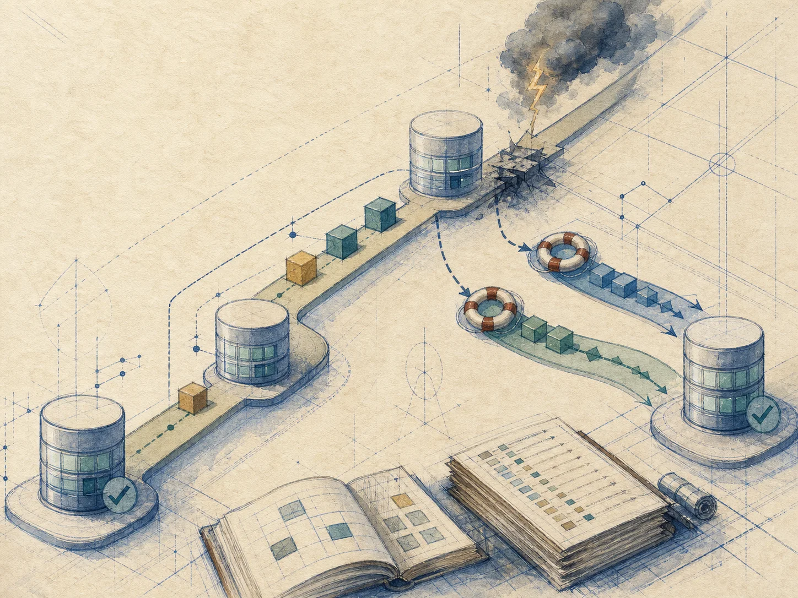

原子性 A
两次更新全部生效为 90、60，或全部撤销为 100、50

转账中断后，依据提交记录决定撤销或补做
 VER. 2608
Built with impress.js
VER. 2608
Built with impress.js
判断转账故障后的余额与恢复动作
独立样本：Account 中 A=100、B=50，向 B 转 10 元
01
02
03
04
05
06BEGIN TRANSACTION
更新 A：余额 100 → 90
更新 B：余额 50 → 60
检查：两次更新各匹配一个账户，业务条件成立
都成功：COMMIT
有失败：ROLLBACK，并停止本次转账流程示意省略并发控制；事务语法、自动提交和异常处理依 DBMS 设置
反例：自动提交下，每条语句各自结束一个事务
| 步骤 | 数据库状态 | 事务范围 |
|---|---|---|
| A 扣 10，语句提交 | A=90，B=50 | 第一笔事务已经结束 |
| B 入账语句失败 | 仍为 A=90，B=50 | 回滚第二笔不会撤销第一笔 |
| 正确划分事务 | 两次更新成功后一起提交 | 任何一步失败则整体回滚 |
程序将扣款和入账划入同一事务，并检查账户与业务条件
无手续费与其他转账；提交或回滚后，总额应为 150
两次更新全部生效为 90、60，或全部撤销为 100、50
最终总额为 150，余额等业务约束成立；正确程序负责维护业务规则
本例要求其他事务不读到未提交的 90、50；并发控制负责协调访问
提交成功后，系统崩溃恢复仍应保留 90、60；可靠日志可补回数据页
恢复主要支撑原子性与持久性；业务逻辑维护一致性，隔离级别详见第 12 章
日志保存更新信息与提交记录后，数据页可以稍后写回
| 所在位置 | 已保存什么 | 断电后是否保留 |
|---|---|---|
| 内存数据页 | A=90，B=60 | 易失内存会丢失 |
| 可靠存储中的日志 | 两次更新的恢复信息和提交记录 | 可重建提交结果 |
| 磁盘数据页 | 可能仍为 A=90，B=50 | 旧页仍在，但余额尚未补齐 |
可靠日志补齐已提交的更新，恢复后 A=90、B=60
连接在提交过程中中断，客户端看到的是“结果未知”
服务端未形成可靠提交记录，故障恢复时撤销这笔事务
提交完成，但成功响应在网络中丢失；恢复应保留转账结果
重试通过转账编号识别同一笔业务，避免重复扣款
存储状态决定可用材料，提交记录决定保留或撤销哪些更新
| 检查对象 | 本例内容 | 恢复判断 |
|---|---|---|
| 提交状态 | T1 的可靠提交记录 | T1 应保留还是撤销 |
| 当前数据页 | 磁盘上是 100、50 还是 90、50 | 哪些更新已经写回 |
| 可用副本和日志 | 备份时点、连续日志的终点 | 最多能恢复到何时 |
后续 U、R、M 三个现场彼此独立，初始余额均为 A=100、B=50
事务故障中止个别事务，系统故障丢失内存，介质故障破坏存储数据
| 故障类型 | 具体现场 | 可用恢复材料 |
|---|---|---|
| 事务故障 | T1 因死锁被撤销，DBMS 仍运行 | 当前数据库及 T1 日志 |
| 系统故障 | 主机断电，易失缓冲内容丢失 | 完好数据文件与日志 |
| 介质故障 | 数据盘损坏，余额页无法读取 | 另一存储上的备份与日志 |
主动 ROLLBACK 属于正常结束；约束错误影响语句或事务，依产品规则判断
独立现场 U：T1 扣款后中断，没有可靠提交记录
| 检查项 | 现场证据 |
|---|---|
| 磁盘余额 | A=90，B=50 |
| T1 的恢复信息 | A 的旧值 100、新值 90 |
| 提交证据 | T1 没有提交，入账尚未执行 |
| 恢复动作 | UNDO：将 A 恢复为 100 |
| 恢复结果 | A=100，B=50；总额 150 |
UNDO 撤销已落盘的未提交更新；未落盘的更新无需改回磁盘页
独立现场 R：T2 已可靠提交，但磁盘只留下扣款
| 检查项 | 现场证据 |
|---|---|
| 磁盘余额 | A=90，B=50 |
| 可靠日志 | A：100→90；B：50→60；T2 提交 |
| 恢复动作 | REDO：补齐尚未保存的更新 |
| 恢复结果 | A=90，B=60；总额 150 |
U 未提交，撤销扣款；R 已提交，补齐入账
值日志重做写回原更新的新值，重复执行转账会再次计算余额
REDO 把 A 设为 90、B 设为 60；再做一次仍是 90、60
再次执行 A 减 10、B 加 10，变成 80、70，虽然总额仍是 150
正确恢复保留已提交转账，撤销未提交转账，每笔业务仅生效一次
独立现场 M：备份与日志保存在另一可用存储上
| 时间 | 已知材料或事件 | 恢复含义 |
|---|---|---|
| 09:00 | 一致备份：A=100，B=50 | 提供可信的起点 |
| 09:05 | 转账 10 元已提交，日志完整 | 可补做为 A=90，B=60 |
| 09:10 | 数据盘损坏；日志保存到 09:10 | 重装备份后恢复已提交结果 |
| 日志仅到 09:00 | 只剩原备份可用 | 无法据此重建 09:05 的转账 |
本例为一致备份；含未提交更新的备份需按日志撤销，详见 11.2
提交记录决定保留或撤销；备份与日志限定可恢复的时点
| 现场 | 证据 | 动作与目标余额 |
|---|---|---|
| U：T1 未提交 | 旧值可查，扣款已写盘 | UNDO → 100、50 |
| R：T2 已提交 | 日志可靠，入账未写盘 | REDO → 90、60 |
| M：数据盘损坏 | 09:00 备份与后续日志可用 | 重建并恢复 → 90、60 |
11.2 进一步介绍日志处理、检查点与备份恢复